跳到地图
Satellite reconnaissance · Inner Mongolia
乌兰察布周边数据中心建设情况
用户给定的 Google 地图点（41.0181°N, 113.1155°E）是集宁城区，552 米视野内只有住宅工地。以它为圆心扫 50 公里，能看见施工的数据中心呈现一条清晰的分布线：全部落在城区以东 11–17 公里、G110 与 G335 之间的走廊带内——西端益武堂、东端四号村，圣家营在北翼已整片出楼；唯一脱离这条走廊的是东南 27 公里的前旗组团。
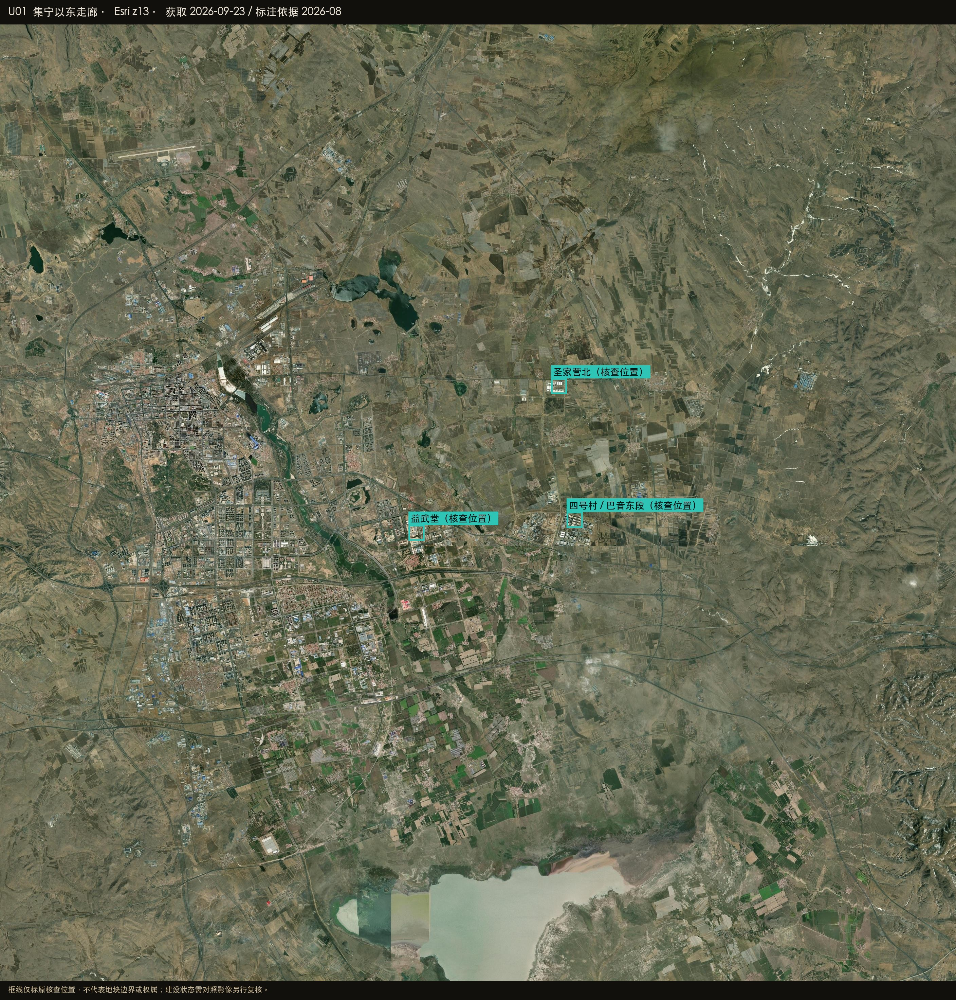
U01 · 集宁以东走廊 · 当前 Esri 影像，框线为原核查位置
影像获取：2026-09-23 · Esri World Imagery。获取日期不是拍摄日期；文字与框线沿用 2026-08 核查，建设状态需结合新图复核。
在建 / 高置信
在建候选 / 已出楼
规划有、影像未确认
底图 Esri World Imagery（WGS84，与 Google 坐标可能偏差数百米）
B · 10.9 km · 走廊西端
距城最近、最成熟的一极。苹果大道 / 阿里大道交叉口，已投运机房与东扩、南扩工地并排。
高置信 · 在建
C · 17.3 km · 走廊东端
G110 北、巴音塔拉镇旁，走廊带的东扩前沿。西侧阵列已成型，东侧垫层和屋面仍在施工。
中高 · 在建候选
D · 16.5 km · 走廊北翼
G110 与 G335 之间、东段以北。本月高分影像：围墙内 15+ 栋白顶大矩形成排，Google 图层滞后。
中高 · 已出楼
E · 27.3 km · 东南离群
土贵乌 / 玫瑰营，脱离 G110 走廊的南向组团。规划有华为四期和中联基地，本次工业园影像不像机房。
低 · 未确认
40.9850°N 113.2380°E
益武堂
走廊西端，距集宁城区最近的一极（10.9 km），察哈尔高新区。地图自带地名「益武堂」，路名苹果大道、阿里大道、兴业路对得上华为—苹果—阿里三角。
高置信 · 在建 + 已投运
- OSM：阿里巴巴数据中心 40.98281, 113.24295；华为云 40.99417, 113.23214
- 东扩：屋面未闭合、塔吊、裸露楼板
- 阿里大道南：基坑与底板浇筑，南侧已投运楼顶有光伏
华为 1/2 期苹果阿里优刻得快手一期大唐中银保信
在 Google 卫星图打开 ↗
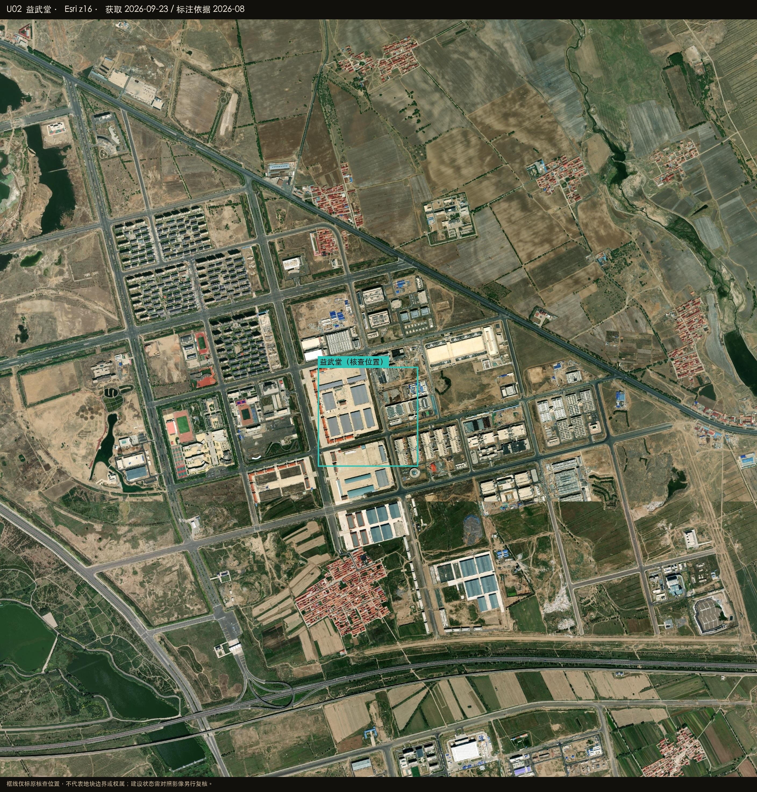
U02 · 益武堂 · 本次获取的 Esri 影像
查看 2026-08 历史标注图
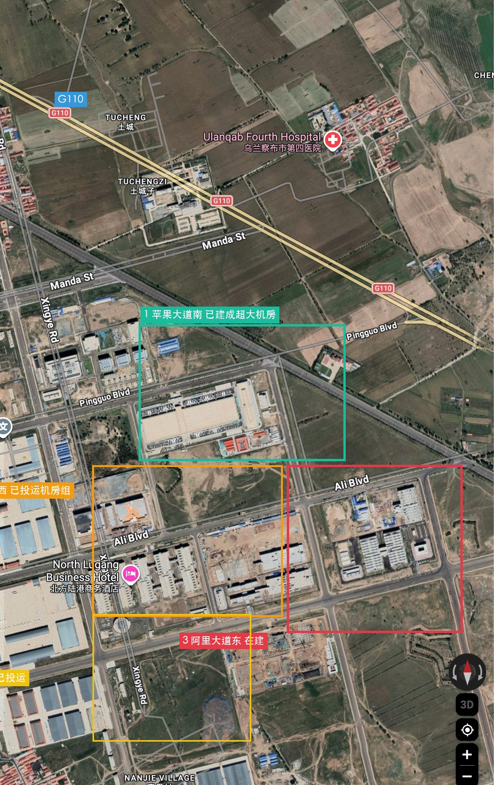
PLATE A02 · 益武堂组团 · 10.9 km
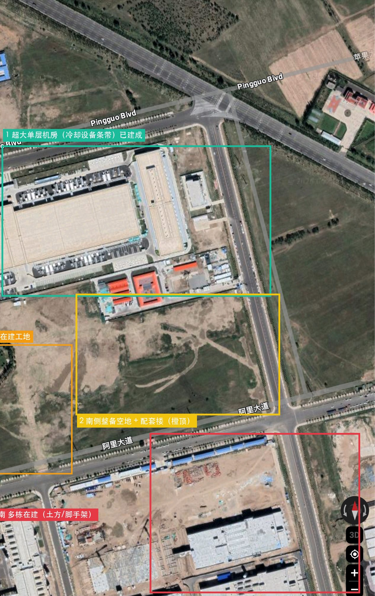
PLATE A03 · 苹果大道 × 阿里大道 · 11.2 km
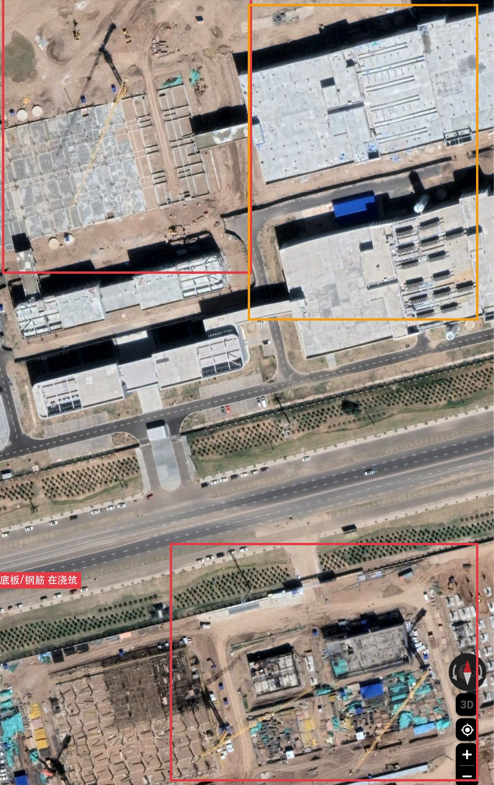
PLATE A04 · 阿里东扩特写 · 40.9825°N 113.2470°E
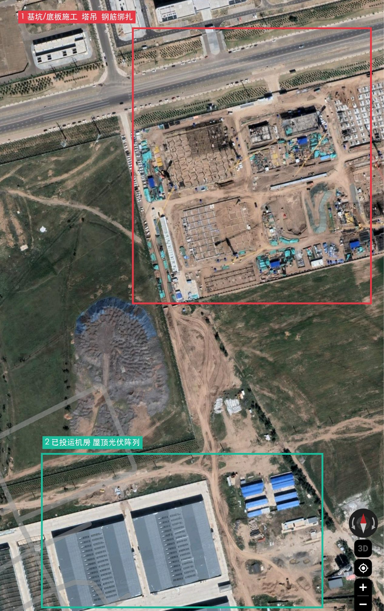
PLATE A05 · 阿里大道南基坑 · 12.0 km
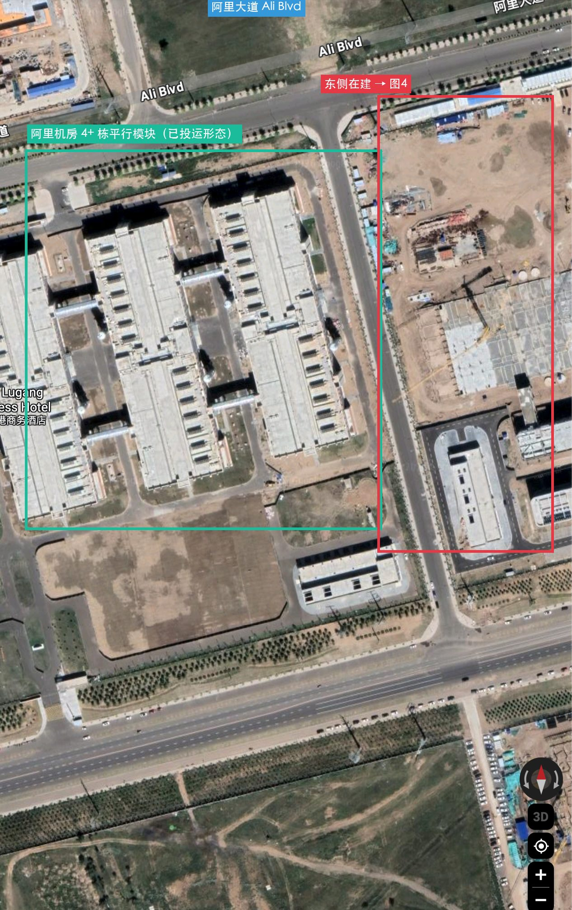
PLATE A10 · 阿里已投运模块（对照） · 40.9828°N 113.2430°E
40.9900°N 113.3180°E
四号村 / 巴音东段
走廊东端，益武堂正东约 7 公里。G110 北、X554 两侧，邻近巴音塔拉镇、三号村、四号村。形态像超大型机房集群，业主需规划图或工地牌匾钉死。
中高置信 · 在建候选
- 西侧：规整大型矩形阵列，已封顶
- 东侧：模块化垫层、超大屋面、多台吊车
- 报道中巴音核心区（中金、华为三期、快手二期、中联、世纪互联等）大部分在建，此地块最像，但未在图上标业主
- 白家湾炼丰石化不要算作数据中心
中金？华为三期？快手二期？中联？世纪互联？
在 Google 卫星图打开 ↗
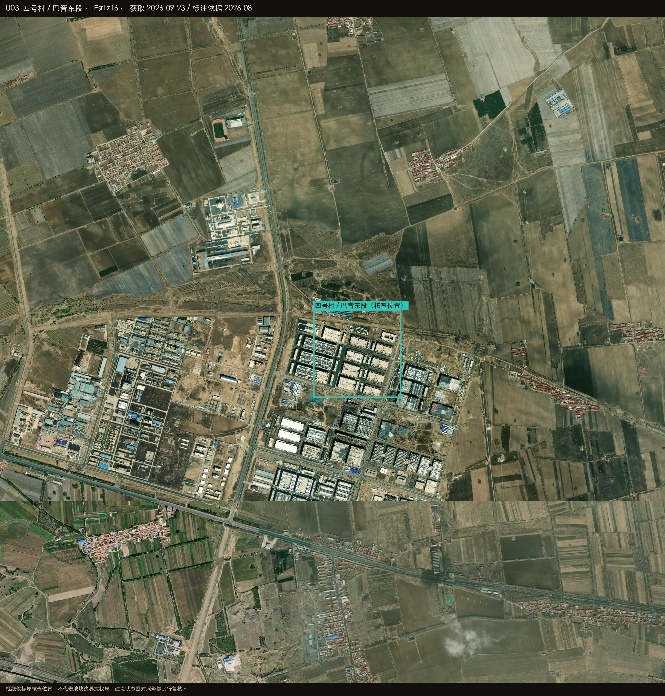
U03 · 四号村 / 巴音东段 · 本次获取的 Esri 影像
查看 2026-08 历史标注图
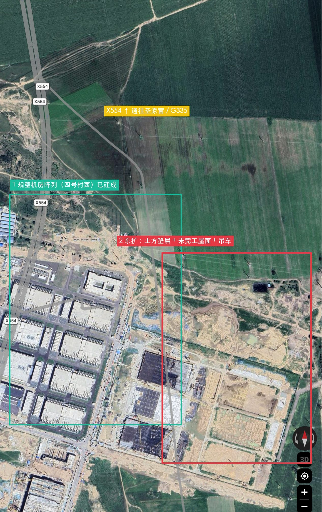
PLATE A06 · 四号村集群 · 17.3 km
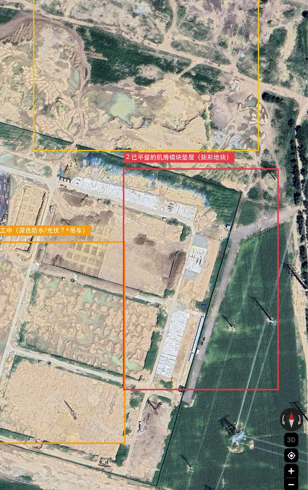
PLATE A07 · 东扩垫层特写 · 40.988°N 113.325°E
41.0410°N 113.3100°E
圣家营北
走廊北翼：G110 以北、G335 以南，与四号村同处东段，把条带向北顶出约 6 公里。2026-08 本月高分影像（用户提供的高分截图 + Esri 同坐标交叉确认）：约 600×450 m 围墙院落内 15 栋以上白顶超大矩形已成排，南侧一排同规格长厅，中部尚有整平待建地块。Google 图层仍是农田，明显滞后。
中高置信 · 已出楼（业主待核）
- Photon/OSM 圣家营 41.02301, 113.31008
- 与 08-13 报道「万润围地、快手星河打桩未动工」存在出入：报道可能只指新围地块，或进度已超前；大院业主需规划图 / 工地牌匾钉死
- G335 南还标有远景、抖音、万国等拟选址，仍是农田，不能当成已开工
万润？快手星河？
在 Google 卫星图打开 ↗
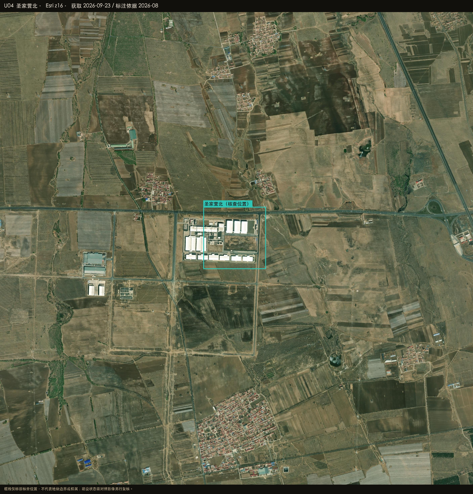
U04 · 圣家营北 · 本次获取的 Esri 影像
查看 2026-08 历史标注图
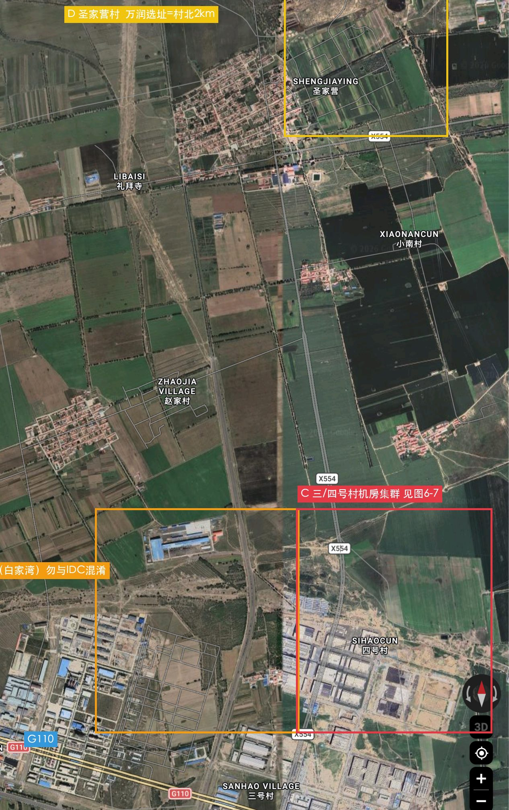
PLATE A08 · 圣家营—G110 剖面 · 16 km
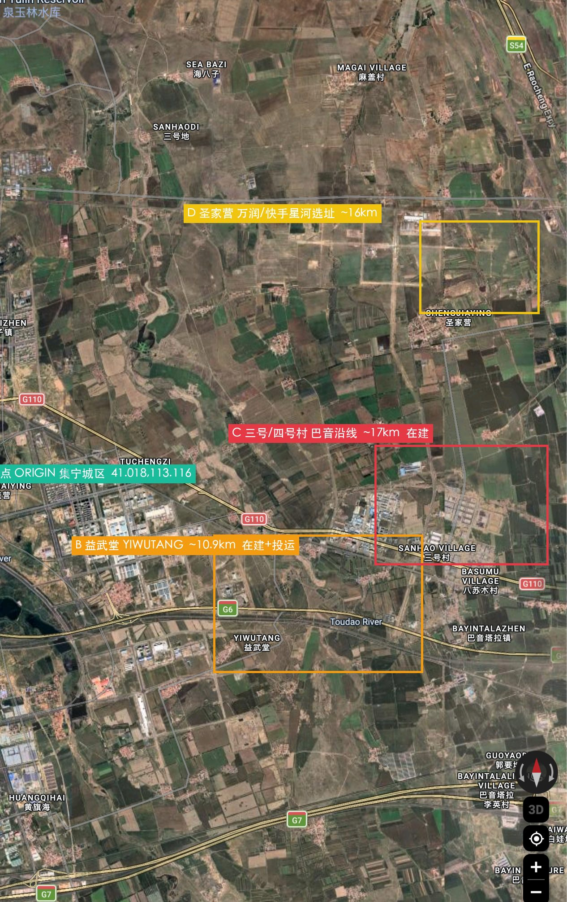
PLATE A01 · 20 km 走廊 · 益武堂地名在底图上
40.7860°N 113.2210°E
前旗土贵乌
东南约 27 公里，50 公里圈内唯一脱离 G110 走廊的组团。规划土贵山片区有华为四期、阿里；中联在前旗有多个在建基地。土贵乌东工业园更像传统厂房和储罐，不能当数据中心。
低置信 · 影像未确认
- 华为云接入点名称含「乌兰察布-玫瑰营」
- 兴和县城约 62 公里，超出 50 公里，未纳入
在 Google 卫星图打开 ↗
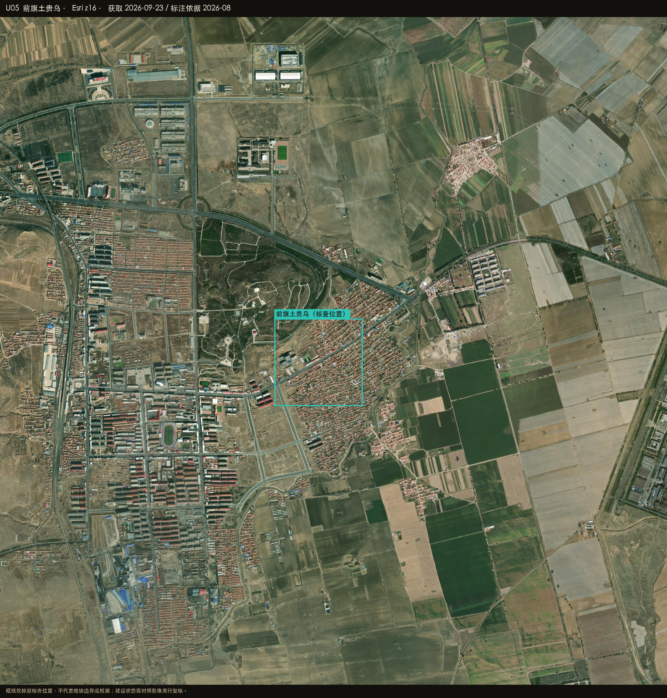
U05 · 前旗土贵乌 · 本次获取的 Esri 影像
查看 2026-08 历史标注图
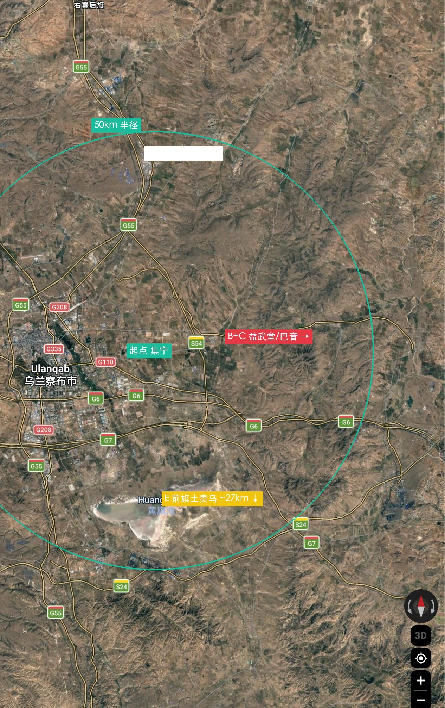
PLATE A09 · 50 km 搜索圈 · 圆心为城区不是园区
怎么判，什么不算
Chrome 打开 Google Maps 卫星（Airbus / CNES / Maxar，版权 2026），对照 OSM 地名和 2026-08 公开报道。卫星可能滞后于地面进度——圣家营已是实例：Google 图层仍是农田，其他高分源（Esri 等）同坐标已出楼。
分布规律
- 三处确认 / 候选点落在同一东西向条带：北纬 40.98°–41.04°、东经 113.24°–113.33°，G6 以北、G335 以南，紧贴 G110 两侧，距城区 11–17 公里
- 条带西端益武堂最成熟，向东到四号村是施工最密集的一段，圣家营把集聚区向北顶出一翼
- 城区及以西、黄旗海方向 50 公里圈内未见机房形态；前旗是唯一的南向离群点
算作在建机房
- 超大无内院矩形、模块化并排
- 屋顶冷机、裸露楼板、塔吊、矩形垫层
- 与苹果大道 / 阿里大道 / 益武堂或 OSM 机房名交叉
明确排除
- 白家湾炼丰石化（储罐、排烟）
- 土贵乌东传统工业园
- 圣家营附近农业大棚
- 城区 552 m 原点的住宅工地
还需要现场做的
- 用高新区规划图把 PLATE A03–A07 和业主对上
- 钉死圣家营北大院业主：规划图或工地牌匾（万润？快手星河？其他运营商？）
- 前旗京蒙零碳园需要单独坐标，不要用土贵乌工业园顶替
打开圆心 50 km 卫星总图 ↗